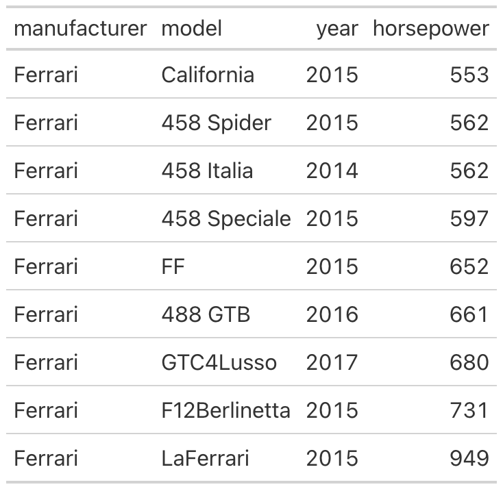
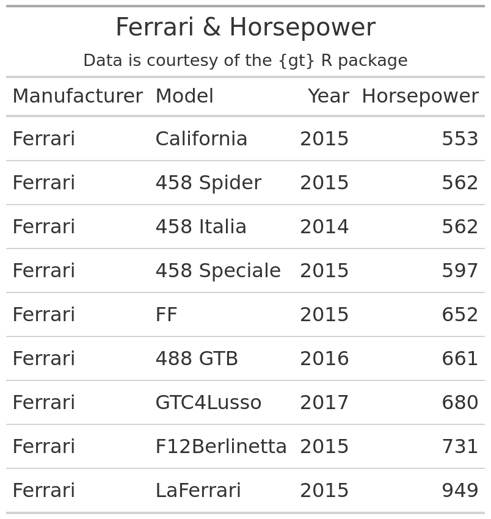
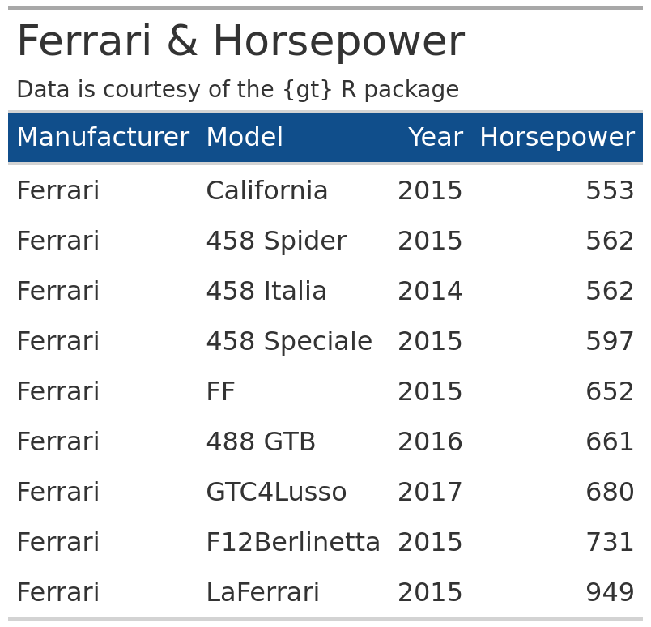
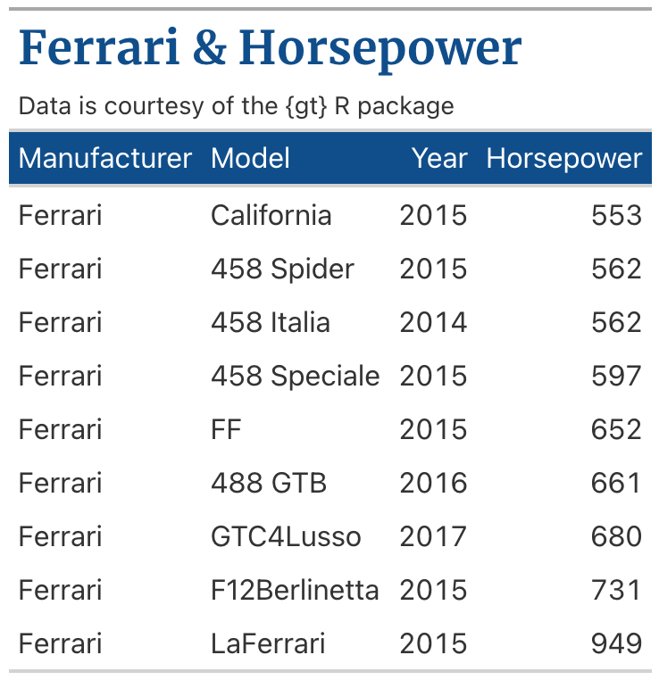
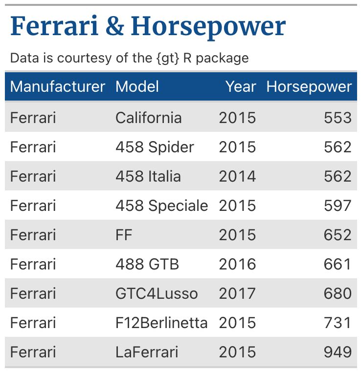
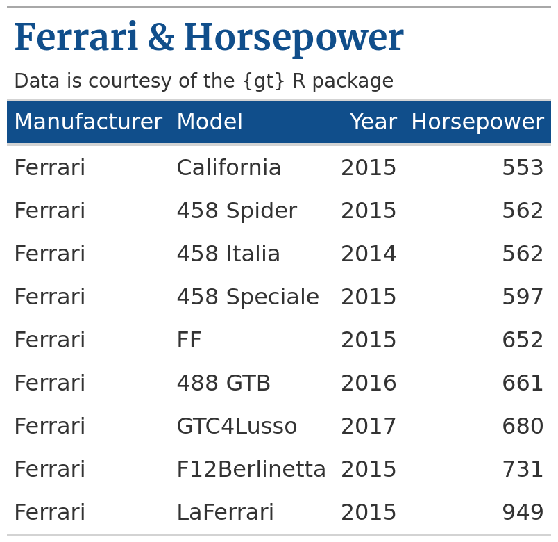
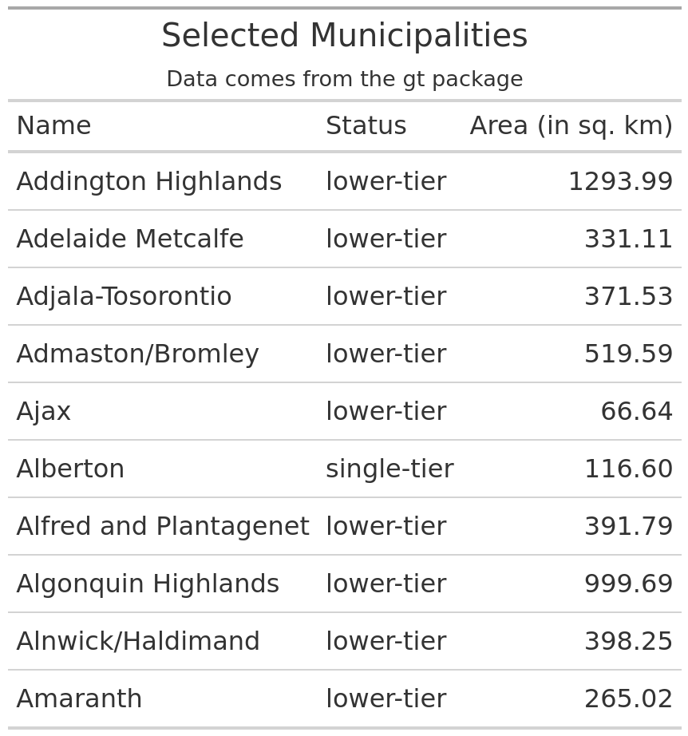
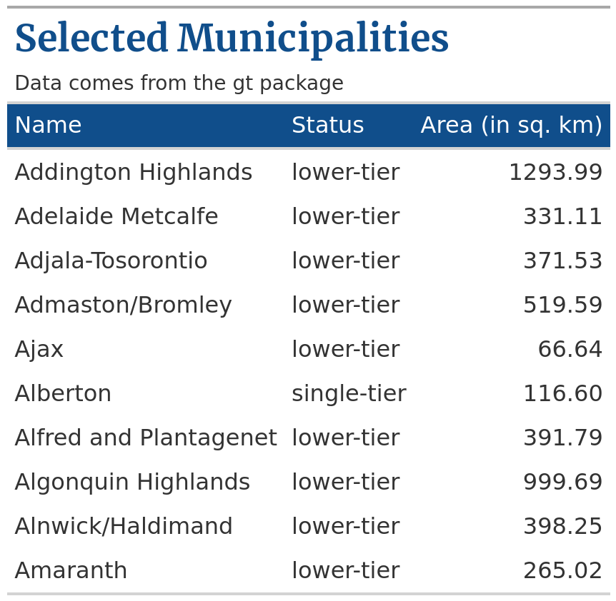

library(tidyverse)
library(gt)
ferrari_data <- gtcars |>
select(
manufacturer = mfr,
model,
year,
horsepower = hp
) |>
filter(manufacturer == 'Ferrari') |>
arrange(horsepower)How to create your own gt themes.
In our consulting work at R for the Rest of Us, we create tables all the time. We don’t just make plain tables, we make tables that look good and communicate well. This is important because:
- A clean design is more convincing
- A powerful design stands out so that people actually look at our tables
- We can use colors to reflect our clients’ branding
We recently helped the Oregon Voices project to create customized data reports for every county in Oregon. Among other things, this required creating custom tables in their theme so that the tables match nicely with the design of their reports.
Designing a table and adding a corporate identity to the design can mean lots of time-consuming work. But here’s the good news: If you have styled your table once, then you can always reuse that theme. And the even better news: If you wrap all of that into your very own theme function, then it just takes one function call to transform any table into your design. Let me show you how that works.
An example with gt
In order to create a beautiful table design, we need a table first. So let’s create a very simple one. Of course, you can apply the same strategies on a very elaborate table. Here let’s just stick to something basic.
First, let us load the tidyverse and the gt package. We’ll use the latter package to create a table. Also, the gt package comes with many neat data sets that we can use to build a table. Here we’ll use its gtcars dataset to create a table on Ferraris.
We can see what the ferrari_data data looks like:
#> # A tibble: 9 × 4
#> manufacturer model year horsepower
#> <chr> <chr> <dbl> <dbl>
#> 1 Ferrari California 2015 553
#> 2 Ferrari 458 Spider 2015 562
#> 3 Ferrari 458 Italia 2014 562
#> 4 Ferrari 458 Speciale 2015 597
#> 5 Ferrari FF 2015 652
#> 6 Ferrari 488 GTB 2016 661
#> 7 Ferrari GTC4Lusso 2017 680
#> 8 Ferrari F12Berlinetta 2015 731
#> 9 Ferrari LaFerrari 2015 949To turn this dataset into a table, we can just call gt().
gt(ferrari_data)
Now, let’s format the column labels (with the cols_label() function) and add a title and subtitle (with the tab_header() function) to describe our data. This will be the table we’ll use to create a custom theme. So, we’ll save it for later use as well.
ferrari_table <- gt(ferrari_data) |>
cols_label(
manufacturer = 'Manufacturer',
model = 'Model',
year = 'Year',
horsepower = 'Horsepower'
) |>
tab_header(
title = 'Ferrari & Horsepower',
subtitle = 'Data is courtesy of the {gt} R package'
)Here’s what the saved ferrari_table looks like:

Add a theme
Right now, our table is pretty boring because it’s a plain black-and-white table. So let’s transform this a little bit. First, we can change a lot of settings via the tab_options() function. What I´m doing here is
changing the row height with
data_row.padding,aligning the titles to the left with
heading.align,adding a little bit of color to the table with
column_labels.background.color,changing the font sizes with
heading.title.font.sizeandheading.subtitle.font.sizeandremoving the vertical lines with
table_body.hlines.width.
ferrari_table |>
tab_options(
data_row.padding = px(6),
heading.align = 'left',
column_labels.background.color = 'dodgerblue4',
heading.title.font.size = px(26),
heading.subtitle.font.size = px(14),
table_body.hlines.width = px(0)
)
Next, let’s change the title’s font and color. We can achieve this by using tab_style() to specify text properties via cell_text() on the title cells that we determine via cells_title().
At first, this may feel a bit confusing but once you get accustomed to using nested function calls to style your table it will feel very straightforward. And if you need to read up on this, you can find a thorough gt styling guide here.
ferrari_table |>
tab_options(
data_row.padding = px(6),
heading.align = 'left',
column_labels.background.color = 'dodgerblue4',
heading.title.font.size = px(26),
heading.subtitle.font.size = px(14),
table_body.hlines.width = px(0)
) |>
tab_style(
style = cell_text(
color = 'dodgerblue4',
weight = 'bold',
font = google_font('Merriweather')
),
locations = cells_title(groups = 'title')
)
Finally, we can make every other row grey by using tab_style() and cell_fill() on the corresponding rows in the table that we select via cells_body(). This requires using a vector that contains only every other row number. Such a vector can be computed with seq(1, nrow(ferrari_data), 2).
ferrari_table |>
tab_options(
data_row.padding = px(6),
heading.align = 'left',
column_labels.background.color = 'dodgerblue4',
heading.title.font.size = px(26),
heading.subtitle.font.size = px(14),
table_body.hlines.width = px(0)
) |>
tab_style(
style = cell_text(
color = 'dodgerblue4',
weight = 'bold',
font = google_font('Merriweather')
),
locations = cells_title(groups = 'title')
) |>
tab_style(
style = cell_fill(color = 'grey90'),
locations = cells_body(rows = seq(1, nrow(ferrari_data), 2))
)
Our table is fully styled now. Even though it’s the exact same information as before, the table feels different, doesn’t it?
Create a reusable theme
So what if we want to reuse this theme? In principle, we can just drop all of the code into a reusable function. Let’s try that with everything except for making every other row grey (we’ll cover that soon enough).
my_gt_theme <- function(gt_tbl) {
gt_tbl |>
tab_options(
data_row.padding = px(6),
heading.align = 'left',
column_labels.background.color = 'dodgerblue4',
heading.title.font.size = px(26),
heading.subtitle.font.size = px(14),
table_body.hlines.width = px(0)
) |>
tab_style(
style = cell_text(
color = 'dodgerblue4',
weight = 'bold',
font = google_font('Merriweather')
),
locations = cells_title(groups = 'title')
)
}Then, we could just apply our gt theme like so.
ferrari_table |>
my_gt_theme()
And of course this works with other gt tables too. Otherwise, this function wouldn’t really be reusable, wouldn’t it? So, here’s a new table I’ve created on the fly.
# towny is part of the gt package
new_table <- towny |>
select(name, status, land_area_km2) |>
slice(1:10) |>
gt() |>
cols_label(
name = 'Name',
status = 'Status',
land_area_km2 = 'Area (in sq. km)'
) |>
tab_header(
title = 'Selected Municipalities',
subtitle = 'Data comes from the gt package'
) Here’s what the unstyled new_table looks like:

Once again, I can just apply my_gt_theme() to change the table’s style.
new_table |>
my_gt_theme()
As you can see, with a custom theme function it’s easy to make any table have a similar look-and-feel.
Advanced section: Make your theme data-dependent
Now, if you’re up for it, we can do something more advanced: Let’s make our theme data-dependent. This is important because some styles require that you have some basic knowledge about the underlying data.
For example, we have already seen that making every other row grey required a vector that we have created with seq(1, nrow(ferrari_data), 2). Hence, our theme function should now the underlying data ferrari_data. To make this happen, we’re going to use a sneaky trick that I’ve picked up from Thomas Mock’s blog.
The trick is this: Every gt table also stores the original data and you can access it via $`data`. For example, if we call ferrari_table from before, this would just show us the table again. But if we use the $ operator to access `data`, then we get the underlying data.
ferrari_table$`_data`
#> # A tibble: 9 × 4
#> manufacturer model year horsepower
#> <chr> <chr> <dbl> <dbl>
#> 1 Ferrari California 2015 553
#> 2 Ferrari 458 Spider 2015 562
#> 3 Ferrari 458 Italia 2014 562
#> 4 Ferrari 458 Speciale 2015 597
#> 5 Ferrari FF 2015 652
#> 6 Ferrari 488 GTB 2016 661
#> 7 Ferrari GTC4Lusso 2017 680
#> 8 Ferrari F12Berlinetta 2015 731
#> 9 Ferrari LaFerrari 2015 949Hence, we can use this in our custom theme function. This way, our theme function is reusable for all kinds of gt tables because our function can always grab the underlying data from the gt object.
my_modified_gt_theme <- function(gt_tbl) {
# Grab number of rows of data from gt object
n_rows <- nrow(gt_tbl$`_data`)
gt_tbl |>
tab_options(
data_row.padding = px(6),
heading.align = 'left',
column_labels.background.color = 'dodgerblue4',
heading.title.font.size = px(26),
heading.subtitle.font.size = px(14),
table_body.hlines.width = px(0)
) |>
tab_style(
style = cell_text(
color = 'dodgerblue4',
weight = 'bold',
font = google_font('Merriweather')
),
locations = cells_title(groups = 'title')
) |>
tab_style(
style = cell_fill(color = 'grey90'),
# Use number of rows from data set
locations = cells_body(rows = seq(1, n_rows, 2))
)
}Now we can use our modified function on our previous tables. Here’s how that looks for our Ferrari table.
ferrari_table |>
my_modified_gt_theme()
Conclusion
Hooray! We’ve learned how to create our own theme and wrap it into a reusable function. This is an elegant way to make your tables more appealing. And if you’re looking for a bit of inspiration for your tables, you can always check out the themes from the gtExtras package.